Function
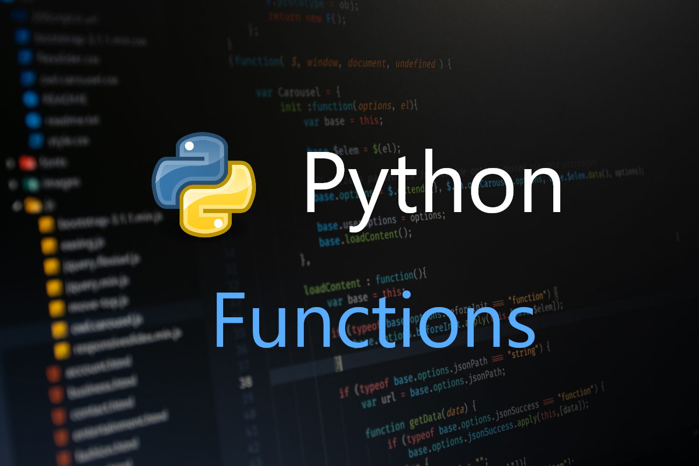Functional programming is a programming paradigm in which we try to bind everything in pure mathematical functions style. It is a declarative type of programming style. Its main focus is on “what to solve” in contrast to an imperative style where the main focus is “how to solve“. It uses expressions instead of statements. An expression is evaluated to produce a value whereas a statement is executed to assign variables.
Concepts of Functional Programming
- Pure Functions:These functions have two main properties. First, they always produce the same output for the same arguments irrespective of anything else. Secondly, they have no side-effects i.e. they do modify any argument or global variables or output something.
- Recursion: There are no “for” or “while” loop in functional languages. Iteration in functional languages is implemented through recursion.
- Functions are First-Class and can be Higher-Order: First-class functions are treated as first-class variable. The first-class variables can be passed to functions as a parameter, can be returned from functions or stored in data structures.
- Variables are Immutable: In functional programming, we can’t modify a variable after it’s been initialized. We can create new variables but we can’t modify existing variables.
FUNCTIONS
- A function is a section of reusable code that performs an action.
- A function has a name and is called, or executed, by that name.
- Optionally, functions can accept arguments and return data.
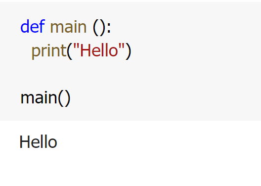
functions names
- Cannot use key words as a function name
- Cannot contain spaces
- First character must be a letter or underscore
- All other characters must be a letter, number or underscore
- Uppercase and lowercase characters are distinct
BENEFITS OF MODULARISING A PROGRAM WITH FUNCTIONS
- Simpler Code: easier to understand when it is broken down into functions.
- Code Reuse: written once to perform that operation and then executed any time it is needed.
- Better Testing: can test each function in a program individually, easier to fix errors.
- Faster Development: library of functions can be incorporated into each program that needs them.
- Easier Facilitation of Teamwork : different programmers can be assigned the job of writing different functions.
designing program using functions
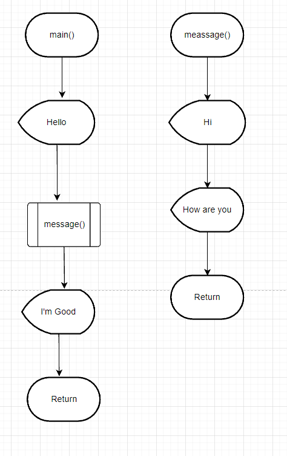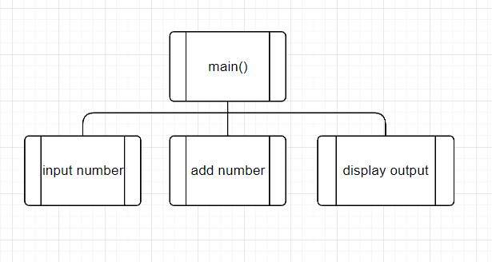
passing arguments to functions
LOCAL VARIABLES
A local variable is created inside a function and cannot be accessed by statements that are outside the function. Different functions can have local variables with the same names because the functions cannot see each other's local variables.
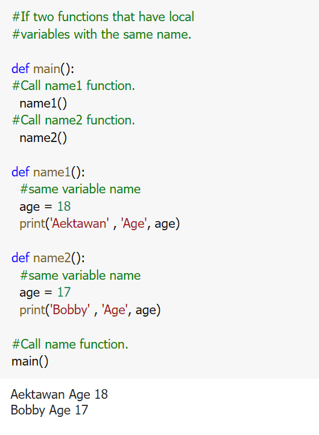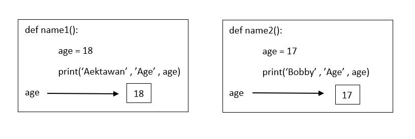
passing arguments
An argument is any piece of data that is passed into a function when the function is called. A parameter is a variable that receives an argument that is passed into a function.
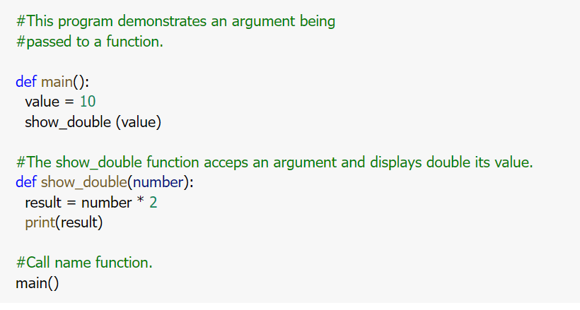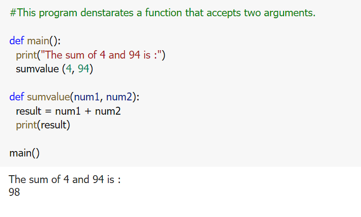
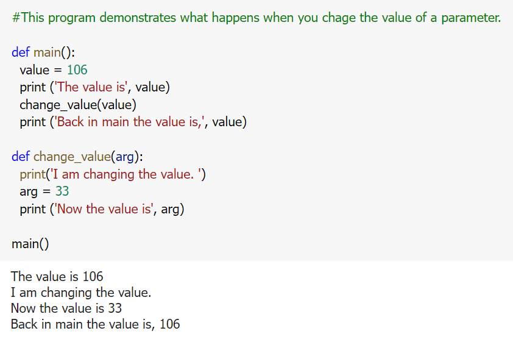
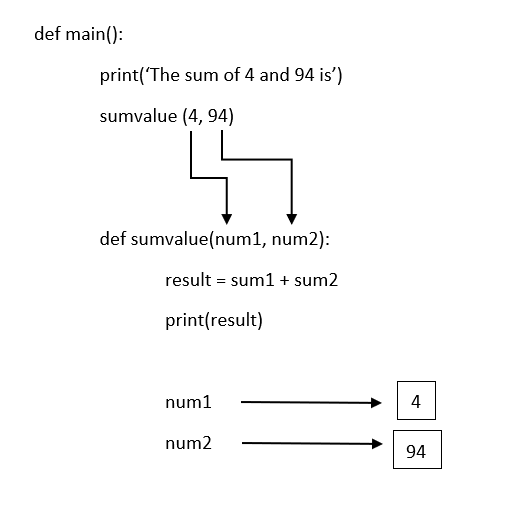
Passing String Arguments
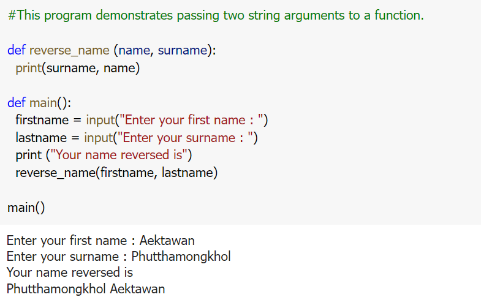Local, Global Variables and Global Constants
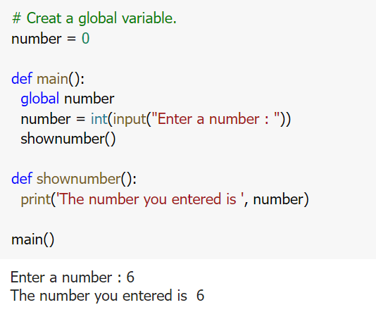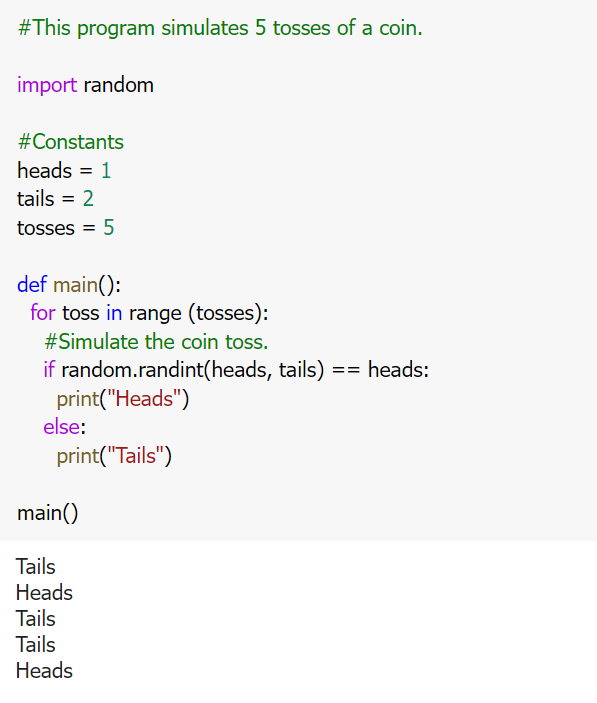
Value-returning functions
A value-returning function has a return statement that returns a value back to the part of the program that called it.
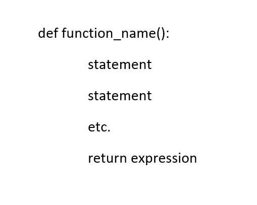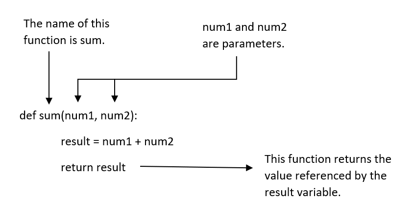
IPO And Function